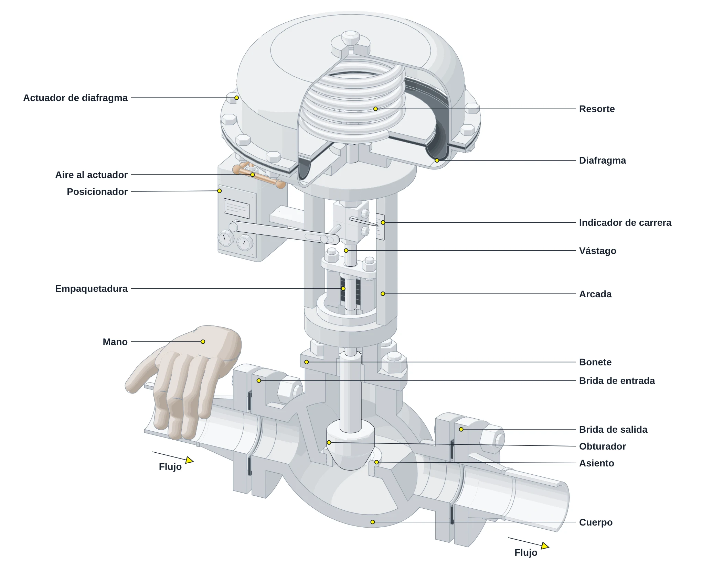

Proyecto de Operaciones Unitarias · Sesión 12
Válvulas, control y vacío
Qué válvula sirve para cada servicio, cómo se dimensiona la válvula de control de una línea con bomba y cómo se escoge el equipo que le hace el vacío a la columna.
La línea de agua con su lazo de caudal
Es la misma bomba 2×3‑8 de la clase anterior, con el impulsor de 190 mm. La válvula de globo manual sale y en su lugar entra una válvula de control.
- La planta pide 8 m³/h como mínimo, 18 lo normal y 25 como máximo.
- FV-101 es una válvula de globo con jaula, de 2 in e igual porcentaje, con = 59,7 y = 0,85, montada entre reducciones de 2½ in. El aire la abre; sin aire, se cierra.
- El nivel del tanque de llegada le da la consigna al controlador de caudal.
- Un retorno de 1 in protege la bomba cuando la válvula cierra.
Las válvulas manuales
Las que aíslan, las que estrangulan, cuánto pierde cada una y la retención.
Aislar y estrangular
Para aislar, la válvula tiene que cerrar sin fuga y estorbar poco cuando está abierta. Para estrangular, la pérdida debe cambiar gradualmente con la apertura, y el agua no puede gastar el cierre.
Cuánto pierde cada una
| Válvula | Abierta | ¾ | ½ | ¼ |
|---|---|---|---|---|
| Compuerta | 0,17 | 0,9 | 4,5 | 24 |
| Globo, disco de tapón | 9,0 | 13 | 36 | 112 |
| Diafragma | 2,3 | 2,6 | 4,3 | 21 |
| Bola, paso completo | 0,06 |
K referido a la velocidad en el tubo, con flujo turbulento. Las fuentes no siempre coinciden y los valores son aproximados.
Mientras la compuerta recorre sus tres primeros cuartos, la línea casi no lo nota; el cambio llega de golpe al final, con el agua acelerada en la ranura que deja la cuña. El globo regula gradualmente desde que empieza a abrir.
En la línea del caso, con la compuerta abierta, pasan 29,5 m³/h. Con la compuerta a ¼ el caudal cae a 22,4; con el globo de disco de tapón a la mitad, a 20,1, y el caudal baja de manera más uniforme a medida que se cierra.
Las retenciones abiertas suman lo suyo: K = 2,0 la de bisagra, 10 la de disco y 70 la de bola.
La retención y la velocidad del agua
El K de una retención vale solo con el disco abierto del todo. Según Crane, una de bisagra común lo logra con agua a 1,35 m/s; el Hydraulic Institute pide 4,6 m/s, una cifra que una línea de agua casi nunca alcanza.
En el caso el agua va a 2,25, 1,62 y 0,72 m/s en los tres caudales. Al mínimo, el disco queda flotando a medio abrir, y por eso la línea lleva una retención de bisagra con resorte.
Si la bomba para y el disco todavía está abierto cuando el flujo se invierte, cierra de golpe: es el golpe de la clapeta, el comienzo del golpe de ariete.
La válvula de control
Sus piezas, su posición de falla, su coeficiente de flujo, sus características y la cavitación.
La válvula de control por dentro

- El obturador se acerca o se aleja del asiento; en las de jaula, las ventanas de la jaula son los orificios que regulan. Obturador, jaula y asiento forman el trim, que se cambia por arriba sin sacar el cuerpo.
- La empaquetadura sella el vástago y lo frena: en las de vástago deslizante es la mayor fuente de fricción.
- El actuador de diafragma y resorte es el más común: el aire empuja el diafragma, y cuando el aire se va, el resorte devuelve la válvula a la posición de falla.
- El posicionador lee la carrera y corrige el aire. Sin él, la banda muerta es de 5 a 15 %; con él, de menos de 0,5 %.
La posición de falla
Falla cerrada
La válvula de entrada protege el tanque de llegada: si se va el aire, cierra y no entra más agua. A cambio, deja la bomba contra una descarga cerrada.
Falla abierta
El retorno de 1 in, que sale entre la bomba y la retención, se abre si FT-101 marca menos de 5 m³/h o si se va el aire, y el orificio FO-105 no deja pasar por él más de 3 m³/h.
Lo que protege
Cada válvula falla hacia el lado que deja seguro lo que ella protege. Si con eso algo queda expuesto, el diseño le pone su propia protección, como aquí la línea de caudal mínimo.
Un orificio que devolviera siempre 3 m³/h no le sirve al caso: con FV-101 abierta del todo, la línea solo llegaría a 24,8 m³/h, por debajo de los 25 que pide la planta.
El coeficiente de flujo
Para una válvula de control, el catálogo da el en lugar del K: cuántos galones de agua por minuto pasan cuando la caída es de 1 lbf/in². Su par en el SI es el , en m³/h con 1 bar, y . El con la válvula abierta del todo dice su tamaño.
Con en m³/h y en kPa, = 0,0865; , la del agua a 60 °F.
Cuando la válvula es de menor diámetro que la tubería, las reducciones le quitan caudal; lo cuenta y, como lleva el mismo que se busca, el cálculo se itera.
= 890 con en pulgadas. La última lleva el al K de una válvula: abierta, una de globo de control equivale a un K entre 2 y 7,5 referido a su propio diámetro.
La característica inherente
Cómo crece el con la carrera lo deciden la forma del obturador o las ventanas de la jaula. En la de igual porcentaje, la más usada, cada tramo igual de carrera multiplica el por el mismo factor:
con la fracción de la carrera y = 30 mientras el fabricante no dé su rangeabilidad.
Un margen sobre el solo dice la carrera en una lineal. Con el doble del que pide el caudal normal, la lineal queda en la mitad de la carrera; la de igual porcentaje, en el 80 %.
La característica instalada
En la línea, la caída en la válvula no es fija: al abrir pasa más agua, la tubería consume más cabeza, la bomba entrega menos y a la válvula le toca menos. Si la válvula abierta se lleva la fracción de la caída total:
Con poca caída, la curva se dobla hacia la de apertura rápida. La de igual porcentaje lo compensa y con 10 a 20 % de la caída queda casi recta.
La prueba es la ganancia instalada, que tiene que quedar entre 0,5 y 2 a cualquier caudal que pida la planta.
Cavitación y bloqueo
En la vena contracta, justo después del asiento, la presión llega a su mínimo y luego recupera una parte. Cuánto, lo dice : cerca de 0,85 en un globo, más bajo en una bola o una mariposa.
Cuando la presión en la vena contracta baja hasta la de vapor, más caída ya no da más caudal: el caudal se bloquea.
La cavitación empieza mucho antes, cuando llega al coeficiente de la válvula. Si el fabricante no lo da, se estima con la IEC 60534‑8‑4, corregido por la presión de entrada.
Cavitar no siempre daña: con por debajo de 0,7 y menos de 15 bar de caída, el globo de una etapa aguanta sin erosión. Lo que queda es el ruido.
Remedios: una válvula de baja recuperación, trims de varias etapas, materiales duros o una presión de salida más alta.
La válvula de control del caso
La caída que deja la bomba, el y la carrera, la ganancia instalada, la cavitación y la instalación.
La cabeza que deja la bomba
La caída disponible para la válvula es la diferencia entre lo que da la bomba y lo que pide la línea. Con el impulsor de 190 mm le quedan 9,5 m con el caudal mínimo, 6,9 m con el normal y solo 3,5 m con el máximo.
La bomba se seleccionó pensando en la válvula manual abierta del todo; ahora tiene que cubrir también la caída de una válvula de control.
Con la de 2 in totalmente abierta, la curva de la línea corta la de la bomba en 26,1 m³/h, el máximo que puede pasar.
El y la carrera
A 25 m³/h quedan 3,46 m, 33,8 kPa, y la ecuación del pide 49,7 sin reducciones. La de 1½ in, con 35,8, se queda corta; la de 2 in, con 59,7, sirve. Con sus reducciones, el tanteo converge en 50,4, el 84,5 % de su .
| Caudal | Caída | que pide | Igual % | Lineal |
|---|---|---|---|---|
| 8 m³/h | 93,1 kPa | 9,6 | 46 % | 13 % |
| 18 m³/h | 67,2 kPa | 25,4 | 75 % | 35 % |
| 25 m³/h | 33,8 kPa | 49,7 | 95 % | 69 % |
La lineal de 2 in tiene = 72,9 y amontona los caudales entre 13 y 69 %; casi cerrada, una banda muerta pequeña mueve mucho el caudal.
La ganancia instalada y la autoridad
- Con la válvula abierta del todo, a ella le tocan 2,7 m de los 10,1 de cabeza dinámica: = 0,27, y con esa fracción la curva instalada más recta es la de igual porcentaje.
- Con un transmisor de 0 a 25 m³/h, las ganancias son 1,0, 1,6 y 1,0 con la de igual porcentaje, y 2,3, 1,4 y 0,43 con la lineal, que queda fuera de la banda por arriba y por abajo.
- Su autoridad, la parte de la caída dinámica que le corresponde, sin la estática, es 47 % al caudal máximo.
- Las metas de carrera son cerca de 90 % al máximo, entre 60 y 70 % al normal y no menos de 10 % al mínimo. El caso se pasa un poco por arriba y lo acepta, porque la ganancia queda dentro.
Exigirle 100 kPa a la válvula obligaría a una bomba que diera 6,8 m más, y esa energía se paga mientras la planta funcione.
La cavitación en la válvula del caso
Al caudal mínimo, la válvula descarga a 64,36 kPa absolutos, entra a 157,4 y se lleva 93,1: el 84 % de los 111,3 kPa que bloquearían el caudal. Le falta poco para bloquearse.
| Caudal | estimado | |
|---|---|---|
| Mínimo | 0,60 | 0,54 |
| Normal | 0,52 | 0,45 |
| Máximo | 0,34 | 0,41 |
Lo más probable es que cavite al mínimo y al normal, pero solo el medido lo decide. Sería ruido sin daño: queda por debajo de 0,7 y la válvula cae menos de 1 bar.
Dónde y cómo se instala
Al final del tramo alto
Al nivel del piso, la válvula descargaría a 194 kPa y usaría solo el 45 % de su caída de bloqueo: a cambio, el tramo alto quedaría casi 1 m bajo la atmosférica. El caso la deja arriba y le pide al fabricante el de su trim.
Sacarla sin parar
Una válvula de bloqueo a cada lado, purgas y un desvío con válvula manual. La de globo manual de antes queda en el desvío: abierta, su de 74 supera el de FV-101, que es de 59,7.
Si cavita
Después de una válvula que cavita va un tramo recto: un codo justo a la salida ahoga el chorro. En el caso se pone un tramo recto antes del codo que baja al tanque.
Las válvulas de una planta de alimentos
Aquí la válvula se escoge también por cómo se limpia: acero inoxidable de la serie 300, rugosidad de 0,8 µm o menos según EHEDG, nada de tramos muertos ni rincones, y todo drena solo.
Sistemas de vacío
Cuánto vacío, los equipos, la carga de aire y limoneno, y el sistema para la columna.
Qué tanto vacío
El vacío se mide en presión absoluta, y cada campo usa sus unidades: 1 mmHg son 133,3 Pa, 1,333 mbar.
Una bomba de vacío es, en el fondo, un compresor: toma el gas por debajo de la presión atmosférica y lo saca a la atmósfera. Comprime casi isotérmicamente, y al bajar la presión de succión el volumen que tiene que desplazar crece rápido.
En Bogotá descarga a 73,7 kPa, así que llegar a 15 mbar pide una relación de 49, contra 68 a nivel del mar: la altitud le resta a un compresor y le suma a una bomba de vacío.
| Proceso | mmHg |
|---|---|
| Evaporadores de sal, azúcar y leche | 250 a 150 |
| Destilación al vacío | 100 a 50 |
| Evaporadores de jugo de naranja | 20 a 15 |
| Desodorización de aceites | 12 a 5 |
| Liofilización | 0,6 a 0,1 |
La rectificación del caso, a 11 mmHg, queda con la desodorización de aceites.
Los equipos de vacío
- El eyector de vapor no tiene partes móviles y maneja casi cualquier gas. Gana una década de vacío por etapa, pero gasta vapor: unos 4,8 kg por kilogramo de aire en una etapa.
- En la bomba de anillo líquido, un anillo de agua hace de pistón. Su límite es la presión de vapor del agua de sello: con agua a 15 °C, de 17 mbar, la de dos etapas llega a 33, y si se le pone un eyector de aire antes, a unos 4.
- Las selladas con aceite llegan muy abajo, pero el vapor que condensa diluye su aceite; las secas de dos etapas, a unos 8 mmHg.
La carga de la bomba
Si nada entrara a la columna, la bomba no tendría qué sacar; pero se filtra aire por cada brida, boquilla e instrumento. Se toman unos 0,2 kg/h por metro de junta, la mayor de las cifras publicadas, para quedar del lado seguro.
Ese aire sale del condensador saturado con el vapor del condensable, y por cada kilogramo de aire se lleva
con a la temperatura de salida del condensador. Como la fuga entra estrangulada, no depende del vacío de adentro.
La carga del vacío de la rectificación
Las juntas de la columna suman 15,1 m de empaque: entran 3,0 kg/h de aire.
- Con el condensador a 25 °C, el limoneno tiene 2,70 mbar y sale 1,03 kg por kilogramo de aire: 3,1 kg/h, casi el 15 % de los 20,8 kg/h de aceite.
- Con agua helada a 5 °C, 0,72 mbar y 0,71 kg/h, el 3,4 %.
Con el condensador a 5 °C, la bomba mueve unos 170 m³/h. Cada kilogramo por hora de aire le pide unos 56 m³/h, y 3,0 kg/h caben por un agujero de 2,5 mm: a la bomba la dimensionan las fugas, no la columna.
El sistema de vacío de la columna
Llegan a 15 mbar los eyectores de dos y tres etapas, la seca de dos etapas, la sellada con aceite y el anillo de agua con un eyector de aire delante. El anillo solo no llega.
- Los eyectores querrían vapor a unos 7 barg y la planta tiene unos 4,3; además, el limoneno que se escapa del condensador acabaría en el agua de sus intercondensadores.
- En una sellada con aceite, el limoneno terminaría disuelto en ese aceite.
- Además, el limoneno arde: aunque el condensador trabaje a 5 °C, a la bomba llega un gas con 4,8 % en volumen de limoneno, dentro de los límites de inflamabilidad a presión atmosférica.
Para la columna del caso: una bomba seca, precedida por un condensador con agua helada, y juntas bien mantenidas. El vacío se controla dejando entrar gas, y con limoneno la purga y el alivio toman nitrógeno.
Las válvulas y el vacío de su planta
Qué piden la Bitácora 2, el Taller 3 y la Bitácora 4.
Lo que pide su planta
Lo que sigue
Agitación y escalado
Con el Quiz 6 al empezar.
Bitácora 2
El PFD, las bombas, las válvulas, el control y el tanque de lavado.
Taller 3
La hoja de datos de una bomba y de su válvula de control, en pareja.
Examen 1
Arrastre de vapor, bombas, válvulas, control y vacío.
El memorando del Laboratorio 1 se entrega el domingo 7 de marzo. Los capítulos 13 y 12 del libro traen, además de esta clase, los cortes que se mueven, recuadros para cambiar la válvula y el condensador, y retos con números que cambian.
IQYA-2031 · Sesión 12
Próxima sesión
Nos vemos el martes 9 de marzo en la clase de agitación y escalado, con el Quiz 6 al empezar.
Figuras: capítulos 13 y 12 del libro de operaciones unitarias del curso. Grabados, vía Wikimedia Commons: «Citrus, Citronier» y «Citrus aurantium», New York Public Library, dominio público; «Un boticario y un alambique primitivo» y «Rama de cítrico con dos frutos», Wellcome Collection, CC BY 4.0; «Citrus madurensis», Francisco Manuel Blanco, dominio público.